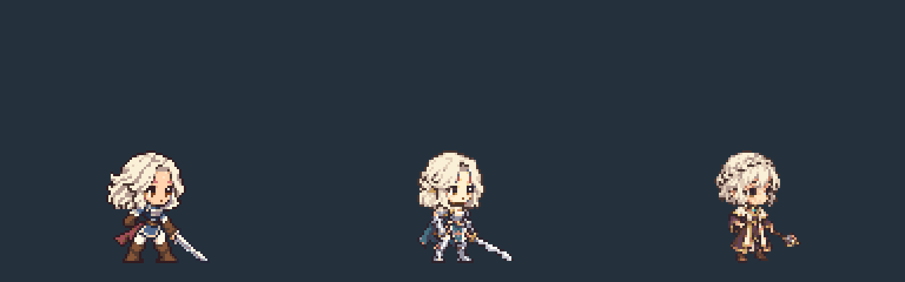

프리스트
상아색 왕관 땋은 머리 · 자주색 예복 · 철퇴
기본 8종 / 스킬 모션 13종 / 스킬 32개 · 걷기와 공격 8장
기준 캐릭터와 크기 비교
왼쪽부터 쿠키 r12 · 기사 r15 · 프리스트. 같은 발 기준점, 대기 키 48px.

일반 공격 ↔ 선택 스킬
왼쪽 일반 공격 · 오른쪽 선택 스킬. 같은 시작 시각, 짧은 쪽은 마지막 장 유지.

공격·주문 이펙트는 게임 담당. 이 패키지에는 몸 동작과 철퇴 잔상만 포함합니다. 파일을 직접 열어 사용할 수 있습니다.